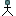
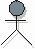

Artifacts >
Artifacts >
 Requirements Artifact Set >
Requirements Artifact Set >
 Use-Case Model... >
Use-Case Model... >

Actor
 Artifacts >
Requirements Artifact Set >
Use-Case Model... >
Artifact:
| ||||||||||||||||||||||||||||||||||
|
 Actor |
An actor defines a coherent set of roles that users of the system can play when interacting with it. An actor instance can be played by either an individual or an external system. |
| UML representation: | Actor |
| Role: | System Analyst |
| Sample Reports: | |
| More information: | |
| Input to Activities: | Output from Activities: |
Different stakeholders use this artifact for different purposes:
|
Property Name |
Brief Description |
UML Representation |
| Name | The name of the actor. | The attribute "Name" on model element. |
| Brief Description | A brief description of the actor's sphere of responsibility and what the actor needs the system for. | Tagged value, of type "short text". |
| Characteristics | For human actors: The physical environment of the actor, the number of users the actor represents, the actor's level of domain knowledge, the actor's level of computer experience, other applications the actor is using, and other general characteristics such as gender, age, cultural background, and so on. | Tagged value, of type "formatted text". |
| Relationships | The relationships, such as actor-generalizations, and communicates-associations in which the actor participates. | Owned by an enclosing package, via the aggregation "owns". |
| Diagrams | Any diagrams local to the actor, such as use-case diagrams depicting the actor's communicates-associations with use cases. | Owned by an enclosing package, via the aggregation "owns". |
Actors are found and related to use cases early in the Inception phase, when the system is scoped. The characteristics of the actors are described before the user interface is prototyped and implemented.
The system analyst is ultimately responsible for managing the actors. Although both requirement specifier and user-interface designer roles will update the detailed information about each actor, the system analyst is responsible for ensuring that:
A user-interface designer is responsible for the integrity of human actor details, ensuring that:
Decide which properties to use and how to use them. In particular, you need to decide at which level of detail the “Characteristics” property needs to be described.
|
Rational Unified
Process
|